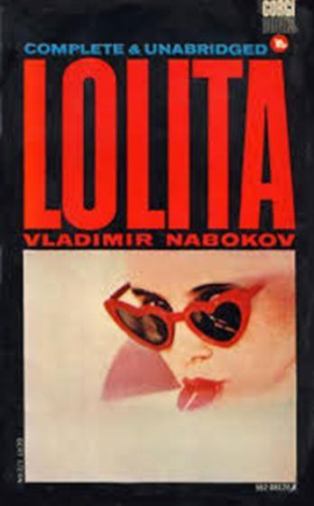
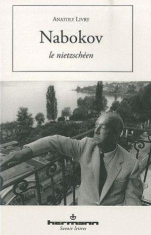

Notre monde occidental secrète sans cesse sa propre mort, tendance dans laquelle il est adroitement guidé par des manipulateurs élevés depuis des générations dans la haine des peuples indo-européens. Dès lors, chaque créateur, s'il aspire à la célébrité et à une certaine aisance financière, est sommé de prendre part à l'anéantissement des nations boréales.
L'une de ces armes anti-Occident réside dans le fait de proclamer « normales » diverses perversions sexuelles, lesquelles deviennent ensuite des tabous auxquels chaque écrivain, cinéaste, universitaire est obligé de se soumettre. Tel fut le choix de Vladimir Nabokov, s'étant retrouvé, suite à l'assassinat de son père à Berlin, en 1922, sans soutien – ni celui du pouvoir ni celui de l'argent – en Europe. S'étant imprégné, grâce à son génie, des classiques russes, il s'était forgé un style unique et est parvenu à écrire le meilleur roman de langue russe du siècle passé Le Don.
Vladimir Nabokov avait tout pour devenir un paria : il aspirait à la renaissance de la Weltanschauung helléno-païenne, à la finesse et à la haute culture qui inévitablement produisent la beauté éternelle.
Profondément nietzschéen1, Nabokov parsemait son œuvre de citations et d'images nées sous la plume de son maître germanophone, espérant comme lui le réveil de l'humanité grâce au retour de l'esprit tragique et de son dieu, Dionysos, chassé d'Europe par les dialecticiens égalitaristes. Chacune de ses lignes était résistance à cette tyrannie de la laideur qui prenait le pouvoir sur les consciences occidentales. Il fallait donc à Nabokov, pour faire connaître les fruits de son labeur, concéder aux idoles nouvelles en collaborant avec leurs prêtres à la destruction de l'humanité.
Rompre d'avec la longue lignée de ses ancêtres germano-slaves pour devenir le père d'un dégénéré, le feu Dmitri Nabokov, ne fut que le versant physique de cette prostitution littéraire qui l'a poussé à commettre cette Lolita que le pays réel des États-Unis, encore traditionnel, vomissait (d'où la publication de ce roman de langue anglaise à Paris, à rebours donc d'un Michel Foucault partant pour les États-Unis).
En effet, Nabokov, pendant plusieurs décennies, avait souffert de sa pauvreté d'apatride, exaspéré d'être soumis à l'arbitraire des fonctionnaires qui avaient le pouvoir de lui accorder – ou de lui refuser – un visa d'entrée ou de sortie :
« Наша безнадежная физическая зависимость от того или другого государства становилась особенно очевидной, когда приходилось добывать или продлевать какую-нибудь дурацкую визу, какую-нибудь шутовскую карт д'идантите, ибо тогда немедленно жадный бюрократический ад норовил засосать просителя, и он изнывал и чах, пока пухли его досье на полках у всяких консулов и полицейских чиновников. Бледно-зеленый несчастный нансенский паспорт был хуже волчьего билета; переезд из одной страны в другую был сопряжен с фантастическими затруднениями и задержками. Английские, немецкие, французские власти где-то, в мутной глубине своих гланд, хранили интересную идейку, что, как бы дескать плоха ни была исходная страна (в данном случае, советская Россия), всякий беглец из своей страны должен априори считаться презренным и подозрительным, ибо он существует вне какой-либо национальной администрации. »2.
Cette détresse financière de Nabokov et son acharnement à y échapper expliquent le fait que sa Lolita est littéralement bourrée des thèses du dangereux détraqué et non moins charlatan Kinsey, lequel prêchait – précisément à l'époque où Nabokov écrivait Lolita – pour la "normalisation" de la pédomanie3 et de la pédérastie dans les États-Unis d'Amérique – attaque larvée contre les sociétés des peuples indo-européens dont nous assistons aujourd'hui à la réussite4. Souvenons-nous que, suite à la publication de sa Lolita à Paris, l'on a pu constater une première poussée visant à faire accepter le viol d'enfants « consentants », notamment via les appels dans la grande presse parisienne d'une meute de pseudo-philosophes qui, par ailleurs, travestissaient également Nietzsche, le guide spirituel de Nabokov5. Ces misanthropes n'ont cependant pu que constater l'impossibilité de légaliser le viol de masse d'enfants chez ces peuples non métissés qui avaient comme fondement la cellule familiale traditionnelle et qui, de surcroît, pouvaient s'appuyer sur la religion de leurs aïeuls pour distinguer le bien du mal. Il a fallu donc démolir la morale pagano-chrétienne des nations occidentales, exploser leurs frontières, les mélangeant avec des Africains. Puis est venu le stade inévitable de la "normalisation" des perversités des adultes avec l'implosion de la famille saine, ce dernier bastion de chaque société qui souhaite ne pas être effacée de la surface de la Terre. Toutes ces étapes ont été franchies et nous assistons actuellement à la sexualisation des enfants dans l'ensemble de l'espace civique occidental : ils sont dressés dès leur plus jeune âge à accepter toutes ces déviances sexuelles qui constituent un nouveau credo qu'ils sont obligés de rabâcher avec engagement à chaque étape de leur parcours scolaire ou universitaire, sans quoi ils seront privés de tout avenir professionnel, voire, bientôt, purement et simplement de leur liberté. Viendra bientôt le temps où ne pas changer de, selon les termes de cette secte haïssant l'humanité, « genre » durant sa vie sera le signe d'une appartenance à l'« extrême-droite » et au « nazisme ».
Nabokov ayant donc consenti à cette prostitution, parvenu à cette notoriété et à cette richesse tant désirée, avait à maintes reprises essayé de se racheter en tant que créateur, présentant sa Lolita comme un clin d'œil à la vie de Dante. En vain ! La racaille universitaire subventionnée par des cosmopolites s'est emparée de son roman et le pauvre Nabokov s'est retrouvé crucifié d'innombrables façons lors de colloques universitaires pseudo-scientifiques dans les études du « gender » : les carriéristes bornés de nos facultés sont sélectionnés exclusivement selon leur frénésie à collaborer à ces crimes contre l’humanité, le moindre écart étant immédiatement sanctionné.
Mon destin de docteur en littérature comparée, auteur d'une thèse sur Nabokov et Nietzsche, n'illustre pas moins cette déchéance humaine de l'Occident. Dès que ma future thèse sur Nabokov et Nietzsche6 s'est fait connaitre, le fils de Vladimir Nabokov alors déjà décédé, Dmitri, ce sodomite notoire depuis disparu lui aussi, m'a accusé dans la grande presse de vouloir perpétrer un acte terroriste à la Sorbonne (« …Анатолий Ливри (настоящая фамилия Лившиц) (…) треб<овал> профессорской должности в Сорбонне, угрожая взорвать дом директора русского отделения… »7) en utilisant pour rependre sa diffamation à mon égard à travers les universités8 ses sbires universitaires américains tels D. Barton Johnson ou d'autres "russistes" qui ne parlent pas le russe. Des sociologues, mais surtout des ethno-sociologues, devraient absolument se saisir de mon dossier au Conseil national des universités (CNU) français pour analyser les calomnies qui furent envoyées à la police française et au Ministère de l'enseignement supérieur français afin de m'interdire de ne serait-ce que chercher un poste de maître de conférences en France.
Cette corruption9 fut justifiée par le fait que ma thèse sur Nabokov adepte de la philosophie aristocratique de Nietzsche était publiée chez Hermann, alors rue de la Sorbonne10. Le choc avait été tel pour ces promoteurs des viols d'enfants légalisés en Occident qu'ils n'avaient pu contenir leur hargne, laissant transparaître dans les conclusions de leurs dénonciations officielles relevant du Ministère de l'enseignement supérieur la stupeur qu'a produite chez eux la parution de ma thèse sur Nabokov et Nietzsche. Comme toute tétralogie antique, cette histoire comporte une partie satirique : les dénonciations de ces "professeurs" me furent envoyées par le ministère de l'enseignement supérieur français lui-même, comme "justifications" de ma non-qualification par le Conseil national des universités.
Il m'est dès lors possible de retracer la manière dont des professeurs "spécialistes" de Nabokov ont poussé leur université à déposer des plaintes pénales, manipulations de la police visant exclusivement à bloquer mes travaux sur Nabokov qui faisait tout pour qu'on ne souvienne pas uniquement de lui comme complice de ce crime contre l'humanité qu'est une pédomanie portée au pinacle en Occident. Il est à ce propos passionnant d'examiner le rôle dans la propagation à travers l'Université occidentale de cette image d'un « Nabokov promoteur de la pédomanie » des prostituées universitaires des élèves de Pierre Pascal, cet agent universitaire français de Trotski et avocat en France de ce créateur de GOULag11 : les génocidaires politiques du passé tendent la main, au sein de l'Université française, aux génocidaires « sociétaux » du présent et de l'avenir. Quant à Dmitri Nabokov, avant de déménager en Enfer, ayant besoin d'argent pour entretenir ses partenaires actifs, il a dû éditer des brouillons de son père sous le titre d'un prétendu "roman" qui trahit toute la chutzpah de Nabokov fils, The Original of Laura. Dans cet écrit, l'on découvre la manière précise dont Nabokov parsemait d'allusions nietzschéennes chaque passage crucial de son œuvre12, ce qui non seulement confirme naturellement ma thèse aristocratique sur Nabokov le nietzschéen13, mais permet aussi aux spécialistes analysant diverses tendances géopolitiques de se saisir du dossier qui raconte mon différend avec l'Université française afin de porter à la connaissance de la communauté académique internationale ce que l'on fait subir au sein des universités de l'Ouest à un esprit libre qui refuse de participer à la légalisation des viols d'enfants « consentants » – nouvelle « normalité » qui submergera notre civilisation. Mes travaux universitaires de nabokovien rendront plus clairs encore ces investigations socio-ethnologiques.
A.L.
Notes :
1 Cf. Анатолий Ливри, Набоков ницшеанец, Ст.-Петербург, Алетейя, 2005, 239 с.
2 Владимир Набоков, Другие берега в Собрании сочинений в четырёх томах, Москва, Правда, 1990, т. 4, с. 283 - 284.
3 Terme qu'il est nécessaire d'utiliser concernant les violeurs d'enfants dits "consentants" à la place de ce très complaisant « pédophilie » plébiscité par les criminels eux-mêmes.
4 Judith Reisman, Eichel Edward, Kinsey, Sex and Fraud: The Indoctrination of a People, John H. Court, J. Gordon Muir Editors, Lafayette, 1990, 237 p.
5 « À propos d'un procès », Le Monde, 26 janvier 1977, Paris, p. 24.
6 Thèse en littérature générale et comparée soutenue à l'Université de Nice-Sophia Antipolis en juillet 2011 avec la bénédiction du professeur Patrick Quillier.
7 Дмитрий Набоков, «Картинки на стене Или Семейное дело Набоковых», Огонёк, Москва, 25.01.2004.
8 "Meanwhile, thanks to lawyer friends I have in Switzerland, certain details emerge regarding Livry's penal history. The reason for his arrest and expulsion from Switzerland was his written intention to murder and dismember his wife, discovered by the wife's Lesbian companion while Livry was off in Africa with a girlfriend. On his return, and his arrest at the French-Swiss border, Livry (apparently having learned a trick or two from Humbert) claimed it was only the draft of a story using names of convenience. By the way, both the "tycoon's daughter" wife and her friend turn out to be bisexual Basel hookers who advertise their services at 500 Euros a pop." : le fils de Vladimir Nabokov, Dmitri, publié par le professeur (!??) D. Barton Johnson sur le forum universitaire (!??) dont il fut l'un des rédacteurs élu par ses pairs académiques (!??) Nabokv-L. "Below Dmitri Nabokov responds to M. Livry's bizzarre campaign of animadversion upon Professor Nora Buhks and himself.", le 20 mars 2004 https://listserv.ucsb.edu/lsv-cgi-bin/wa?A2=ind0403&L=NABOKV-L&P=R28368&1=NABOKV-L&9=A&J=on&d=No+Match%3BMatch%3BMatches&z=4
9 « La recherche du candidat déjà en grande partie publiée ». Régis Gayraud, président de la section 13 CNU et rapporteur auto-désigné de Dr Anatoly Livry. « Expertise » signée ce fonctionnaire – doctorant de Michèle Aucouturier placé dans l'Université française par l'agent trotskiste Pierre Pascal – le 26 janvier 2012.
10 Cf. Dr Anatoly Livry, Nabokov le nietzschéen, Paris, « Hermann », 2010 : http://www.parutions.com/index.php?pid=1&rid=1&srid=123&ida=13068
11 À ce propos cf. Dr Anatoly Livry, « L'ANARCHO-TROTSKISTE PIERRE PASCAL ET SON ENGEANCE », Moscou, Géopolitica, le 1er décembre 2017 : https://www.geopolitica.ru/fr/article/lanarcho-trotskiste-pierre-pascal-et-son-engeance
12 Dans le fragment 133 de Laura, on trouve une preuve flagrante des recherches nietzschéennes nuancées menées par Vladimir Nabokov qui transcrivait en anglais les sentences criminelles de Zarathoustra : «the art of self-slaughter/ TLS 16-1-76 «Nietz[s]che argued that the man of pure will ... must recognise that that there is an appropriate time to die»/ Philip Nikitin: The act of suicide may be «criminal» in the seme sense that murder is criminal but in my case it is purified and hallowed by the incredible delight it gives».
13 Anatoly Livry, Thèse de doctorat, Nietzsche et Nabokov, Lille, ANRT, 2014, 332 p., ISBN : 9782729585389, http://www.diffusiontheses.fr/66596-these-de-livry--anatoly-.html
Partager cette page